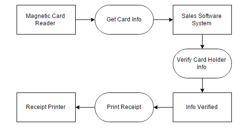

Non-functional Requirements
- System should be available at all times during the park’s operational hours
(Monday-Saturday, 8am-8pm).
- The system should be easy to access and use by employees.
- An employee should be able to learn how to use the system after two hours of training.
- Each employee to use the POS system must be logged in by entering their Employee ID Number and personal PIN.
- System should be able to be accessed remotely to push changes/updates.
- 90% of employees should be able to complete an entire sale transaction in under 2 minutes.
- There should be at least two available POS systems at every store/restaurant location.
- System should have at least 99% availability.
- The server response time should be less than 2 seconds for at least 90% of transactions.
- System’s UI response time should be less than 1 second on average.
- System should be able to handle at least 40 transactions per second.
- Employees should be satisfied with the usability of the POS system.
Credit Card Transaction
